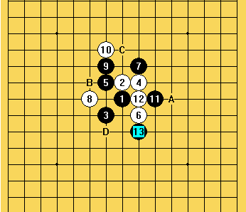

真的很痛苦，本来已写好的此篇文章既然突然停电丢失，需要重写郁闷。
上一篇中已经基本解释了什么是威力群，威力群A区AA区应当如何判断，现在回忆一下几个基本概念，威力群A区的判断方法――己方有效子力最多，而敌方干扰势力最少的地区。AA区则在两条基础之上加上攻击素材的创造这一条。
其实中盘以后威力群往往几手就转移到另外一个地方，那么应该如何时刻准确把握威力群动向来进攻和防守呢？准确把握易转移的威力群有多大作用呢，今天利用此篇文章来具体介绍。
在正文之前，想解释一下自己这个思路的由来，一是下棋以来不断的积累思考，另一条就是很重要的，最近对黑石算法产生的浓厚兴趣，黑石为何局部做杀和防守如此强呢，这是为什么呢？当然我对程序是一窍不通，来个外行都算不上，但是我不断的观察和思考，黑石选点做杀进攻的时候，往往遵循威力群AA区的判断方法，防守则再下一篇中介绍，黑石的做杀就是强区加强，堆砌素材，尽量避开干扰，这正是威力群的要素，这只是我个人的一点观点，下面进入正文。
下面用一盘高手对局，来理解怎样随时准确把握易转移的威力群AA区，并利用起进攻的例子，是吴镝跟呆呆06年全国赛上的一盘对局，吴镝曾经用大海磅礴来形容呆呆的进攻，我们就来欣赏一下
斜月开局，留下黑棋3打，白8手骗招，黑9走J9已有必胜谱，黑棋控制局面下到13手，白14面临选择，先来分析一下当前局面

我们来看此时黑棋的7和13的位子很有意思，对角斜线，A点可将其连接，黑棋7 9连通左右半盘，再看9和13的位子，对角斜线上也有个可连接的好手B点，甚至黑棋7 9的对角斜线C点又与A点同一斜线，D点更不用说目前威力群的所在，若黑冲出威力无穷，可以说整个盘面是全盘连接，棋路展的很开，白棋14无奈当住眠三形成一个活2，16手挡住黑棋发展要点，但此时黑棋全盘可连，白16一落下，此时黑棋威力群立刻转移，从右下战场转移到左上，17好手，18是算清了很多东西以后的无奈之举，18落后，黑棋的威力群AA区又再次转移，白棋18 8 18 14形成了双活2，左上黑棋已杀不出，此时黑棋已判断出中间的眠三可以使白棋没有连续进攻的手段，19做棋整个右半盘又活了，白20可能是前面的输棋影响到状态和心情，低估了右边黑棋的力量，下到22手已经是不是你死就是我亡的局面了，此时来判断一下黑棋的威力群AA区在哪，首先白棋无先手，J10黑棋禁手点，此时有效子力最多，干扰最少的23，而且24唯一挡上边，25此时黑棋威力群又向右下挤了几格，黑25妙手，解禁做V同时拓展空间，白26无奈挡在要点，因为这个26，黑棋有效子力的对比和干扰势力的分析，威力群右向上跑了几格，27堆积素材，28无奈只能挡中间，
黑29上下左右连接，胜势已不可阻挡，33绝杀。
此盘中可以看到，善于进攻的高手，必然把握威力群动向的能力很强，只是可能他们已理解吸收成为一种行棋本能，这里拆解出来供大家学习。
下面再来看一盘很有意思的经典对局，另一位世界冠军的对局，此盘中有威力群判断正确的一方，也有判断错误的一方，一对一错造成了胜负两种截然不同的结果。
这是安度对奈良（不是奈良就是相乐俊）某次世界杯上的一局，
疏星开局，5手留下1打，一系列争夺与交换下到12手，黑棋13手很有意思，一方面干扰了白棋4 6 12的一小块棋，一方面与黑棋自己5 1 11 有连接的想法，并且棋盘6线活了 ，将来做棋L8有可能连通上下黑棋，14防守，15拓展空间，17盖住白棋活2同时，自己形成双眠2，白棋18防在下边，
======================================================
黑棋19形状非常好，接近必胜，威力群判断正确，白18落后，没有再左下方逗留，看此时的20防守，A点弱，对黑棋威力群判断错误，B点限制黑棋左上蔓延的能力不大，黑棋19和7有对角
把你的带字母的谱发来
 不错 继续关注
不错 继续关注非鸟的 “五子概念威力群”更适合无禁的“自由五子棋”
因为禁手的存在 破坏五子棋连五的基本棋理，破坏了“威力群”的可靠性。
许多的A区AA区 因为禁手而不成立！
楼上的你没看明白呀
拿一定数量的对局去套一下 就明白了 自由五子棋中 运用更可靠
而禁手规则中许多的A区AA区 因为禁手而不成立！ 许多非A区AA区 可以抓禁！
所谓A区AA区不过是进攻防守中的首要选择点，难道有禁规则不用进攻防守？
怎么可能因为禁手而不成立呢，而且不是固定存在是根据定义判断出来的，一盘棋不管多难进攻，多难防守，
它都是必然存在当前A区AA区的，跟禁手没关系，是首要选择区域，选择点，难道有禁就没棋下了，当前没有AA区了
非鸟弟弟加油！！！为你而骄傲！